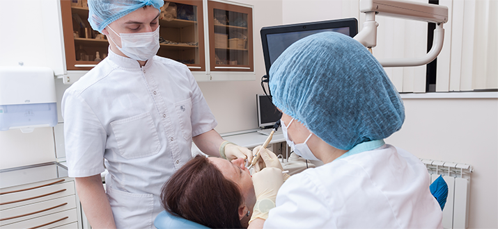

Блог нашей клиники
Височно-нижнечелюстной сустав (ВНЧС)
Раздел гнатологии изучает особенности функционирования «жевательного органа». Жевательный орган — это сложный комплекс систем отвечающих за функции жевания, речи, компенсации стрессовых нагрузок, поддержанию осанки, взаимодействия.
 Название фото(возможно двустрочное)
Во времена цементных пломб, штампованных коронок, стоматология не сталкивалась с проблемами ВНЧС до появления металлокерамических коронок, цельнолитых коронок из кобальт хромового сплава, коронок на основе оксида циркония, имплантатов, распространения ортодонтического лечения на брекет системах. ВНЧС лечили врачи общей практики в рамках общесоматических заболеваний суставов. Постепенно был накоплен опыт осложнений после всех видов выше перечисленных методов лечения. В виду высокой жесткости существующих конструкций адаптировать их под «свои нужды» (сколоть стереть , прогнуть) организму очень сложно , а порой невозможно.
Часто слабым звеном становится сустав (дисфункция сустава), также пародонт зуба (пародонтит), а также сами ткани зуба (стирание зубов). Следовательно, современное лечение зубов без учета особенностей функционирования жевательного органа каждого конкретного пациента ,может приводить к дальнейшему разрушению суставов, тканей пародонта и эмали зубов.
Симптомы и признаки заболевания ВНЧС:
- — Болевые ощущения при открытии рта и жевании
- — Изменения в костной ткани и надкостницы верхней и нижней челюстей
- — Ощущение скованности, тяжести в жевательных мышцах
- — Щелчки, похрустывания в области ушей
- — Нет возможности широко открыть рот
- — Стирание зубов
- — Клиновидные дефекты на шейках зубов
Причины нарушения функционирования ВНЧС:
- — Общесистемные заболевания , такие как ревматоидный артрит, остеопороз и т.д.
- — Травматические контакты зубов при смыкании
- — Нарушение окклюзии из-за неточного восстановления анатомической формы зубов после лечения
- — Изначально неправильно сформированный прикус
- — Нарушение осанки
- — Наслоение замещающих эффектов вследствие потери зубов и адаптации оставшихся к дополнительным нагрузкам
- — Подверженность стрессу и другие особенности нервной системы
- — Дорожно-транспортные травмы
Этапы лечения в нашей клинике:
Все зубы должны контактировать одновременно, а нагрузка распределяться по всему зубному ряду. Если один из зубов находит опору раньше других, то это можно рассматривать как дисфункцию анатомической формы жевательной поверхности зубов (Суперконтакт). Что бы исключить преждевременные контакты зубов, необходимо восстановление анатомической формы жевательной поверхности. При получении травмы необходимо избегать суперконтакты, т. к. это дополнительная нагрузка и она может усугублять проблему.
Все зубы должны контактировать одновременно, а нагрузка распределяться по всему зубному ряду. Если один из зубов находит опору раньше других, то это можно рассматривать как дисфункцию анатомической формы жевательной поверхности зубов (Суперконтакт). Что бы исключить преждевременные контакты зубов, необходимо восстановление анатомической формы жевательной поверхности. При получении травмы необходимо избегать суперконтакты, т. к. это дополнительная нагрузка и она может усугублять проблему.
Все зубы должны контактировать одновременно, а нагрузка распределяться по всему зубному ряду. Если один из зубов находит опору раньше других, то это можно рассматривать как дисфункцию анатомической формы жевательной поверхности зубов (Суперконтакт). Что бы исключить преждевременные контакты зубов, необходимо восстановление анатомической формы жевательной поверхности. При получении травмы необходимо избегать суперконтакты, т. к. это дополнительная нагрузка и она может усугублять проблему.
Все зубы должны контактировать одновременно, а нагрузка распределяться по всему зубному ряду. Если один из зубов находит опору раньше других, то это можно рассматривать как дисфункцию анатомической формы жевательной поверхности зубов (Суперконтакт). Что бы исключить преждевременные контакты зубов, необходимо восстановление анатомической формы жевательной поверхности. При получении травмы необходимо избегать суперконтакты, т. к. это дополнительная нагрузка и она может усугублять проблему.
Методы лечения:
- — Пришлифовка зубов
- — Ортодонтическое лечение (коррекция прикуса) и нижней челюстей
- — Реставрация зубного ряда с применением артикулятора
- — Рационально спланированная ортопедическая конструкция
- — Медикаментозные мероприятия
- — Наложение лечебных шин
- — Хирургическая помощь в случае анатомических изменений в суставе (разрушение межсуставного диска)
Подписаться на еженедельную рассылку полезной информации Исиды